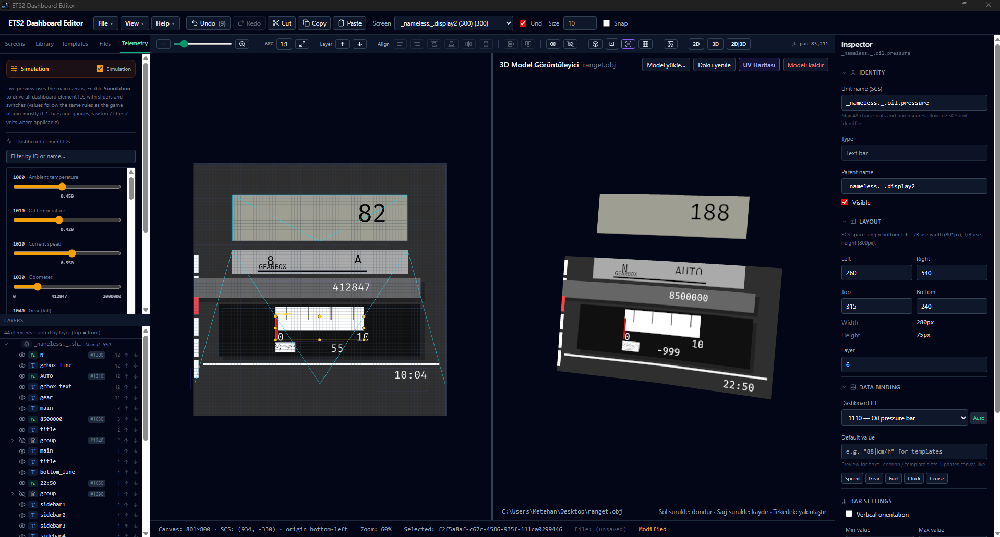

Precision in
every pixel.
The ultimate visual editor for creating custom Euro Truck Simulator 2 telemetry dashboards. Built for creators who demand absolute control over their driving experience.
Free & Open Source — Windows

Everything you need to build the perfect dashboard
Drag & Drop Editor
Add, position, and resize dashboard elements visually. Design complex layouts without touching a single line of code.
Live Telemetry Preview
Connect directly to the ETS2/ATS telemetry server and see your dashboard update in real-time as you drive in the simulator.
3D Model Viewer
Apply your dashboard design to a UV-mapped 3D truck model and preview how it will look in-game before exporting.
Custom SVG Support
Import your own vector graphics and manipulate their paths, colors, and transformations dynamically based on game telemetry data.
One-Click Mod Export
Export your dashboard as a game-ready mod ZIP with a single click. No manual file wrangling — just create and ship.
Full Undo / Redo
Every action is tracked. Experiment freely knowing you can always step back to any previous state with unlimited history.
Support the Journey
This project is a labor of love for the ETS2 & ATS community. If the editor helps you create the dashboard of your dreams, consider supporting its development on Patreon. Every contribution helps keep the updates rolling.